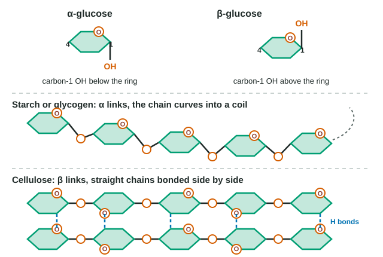

Unit 1 practice test: Chemistry of Life
12 exam-style questions from the unit, free, with an explanation for every option. Sets share one table, graph or experiment, as on the real exam.
Covers: Structure of Water and Hydrogen Bonding; Elements of Life; Introduction to Macromolecules; Carbohydrates; Lipids; Nucleic Acids; Proteins.
Model
Alpha and beta glucose in polymers
The figure shows the two ring forms of glucose, part of a starch chain and parts of two cellulose chains. Carbon 1 is the ring carbon to the right of the ring oxygen; carbon 4 is on the opposite side of the ring.

1. According to the model, what distinguishes α-glucose from β-glucose?
- The direction of the –OH group on carbon 1: below the ring in α, above it in β.
- The number of carbon atoms: α-glucose has six, and β-glucose has five.
- The ring oxygen, which is present in α-glucose but replaced by carbon in β-glucose.
- Their elements: β-glucose contains nitrogen, which is why cellulose is hard to digest.
Show the answer
α and β glucose are isomers that differ only in whether the carbon-1 –OH points down (α) or up (β).
- Correct: The direction of the –OH group on carbon 1: below the ring in α, above it in β.: Correct. Everything else in the ring is identical.
- The number of carbon atoms: α-glucose has six, and β-glucose has five.: Both forms are C6H12O6, with six carbons.
- The ring oxygen, which is present in α-glucose but replaced by carbon in β-glucose.: Both rings contain the same oxygen; the forms differ only at carbon 1.
- Their elements: β-glucose contains nitrogen, which is why cellulose is hard to digest.: Both forms contain only C, H and O. Nitrogen is in chitin's sugar, not in β-glucose.
2. Based on the model, why does cellulose form strong fibers while starch does not?
- Cellulose chains are coiled more tightly than starch chains, which makes each one stronger.
- Straight chains lie side by side, so –OH groups on neighboring chains form many hydrogen bonds.
- Cellulose chains are joined to one another by covalent glycosidic bonds that run between neighboring chains.
- Each cellulose monomer carries more –OH groups than a starch monomer, so cellulose dissolves faster.
Show the answer
β bonds flip every other glucose, so a cellulose chain runs straight. Straight chains pack side by side and hydrogen-bond through their –OH groups into strong fibers.
- Cellulose chains are coiled more tightly than starch chains, which makes each one stronger.: The model shows the reverse: starch chains coil, and cellulose chains are straight.
- Correct: Straight chains lie side by side, so –OH groups on neighboring chains form many hydrogen bonds.: Correct. Many hydrogen bonds between parallel chains bind them into cables; coiled starch chains cannot line up this way.
- Cellulose chains are joined to one another by covalent glycosidic bonds that run between neighboring chains.: The glycosidic bonds run along each chain. The model shows chain-to-chain links as dashed hydrogen bonds.
- Each cellulose monomer carries more –OH groups than a starch monomer, so cellulose dissolves faster.: Both are glucose, with the same –OH groups; and dissolving would weaken fibers, not strengthen them.
3. Chitin's chains are built like the cellulose chains in the model, except each monomer has a nitrogen-containing group in place of one –OH. Which conclusion follows?
- Chitin is a storage polysaccharide, because nitrogen makes its chains coil like starch.
- Chitin can be digested by the same enzymes that hydrolyze starch, because both are made of sugars.
- Building chitin uses some of the nitrogen an insect takes in; building cellulose uses none.
- Chitin contains no glycosidic bonds, since its monomers carry nitrogen.
Show the answer
Combine the model with what you know about elements. Chitin's straight β chains make fibers like cellulose, but its nitrogen means an insect must spend nitrogen to build it.
- Chitin is a storage polysaccharide, because nitrogen makes its chains coil like starch.: Chitin is β-linked like cellulose, so its chains run straight and form structural fibers.
- Chitin can be digested by the same enzymes that hydrolyze starch, because both are made of sugars.: Starch enzymes fit α bonds; chitin's bonds are β, like cellulose's, so they do not fit.
- Correct: Building chitin uses some of the nitrogen an insect takes in; building cellulose uses none.: Correct. Each chitin monomer contains nitrogen, while cellulose contains only C, H and O.
- Chitin contains no glycosidic bonds, since its monomers carry nitrogen.: Chitin's sugar units are still joined by glycosidic bonds formed by dehydration synthesis.
4. In the cellulose chain, two neighboring glucose units are joined through an oxygen between carbon 1 of one unit and carbon 4 of the next. How did this bond form?
- By hydrolysis, which added a water molecule between the two glucose units.
- By a hydrogen bond between the carbon-1 –OH of one glucose and the carbon-4 –OH of the next glucose.
- By dehydration synthesis between two –OH groups, releasing water and leaving an oxygen bridge.
- By an ionic bond between a positive carbon 1 and a negative carbon 4.
Show the answer
Every glycosidic bond, α or β, forms by dehydration synthesis: two –OH groups give up H2O, and the remaining O bridges the sugars.
- By hydrolysis, which added a water molecule between the two glucose units.: Hydrolysis breaks glycosidic bonds; it does not form them.
- By a hydrogen bond between the carbon-1 –OH of one glucose and the carbon-4 –OH of the next glucose.: A hydrogen bond is a weak attraction; the link along the chain is a covalent glycosidic bond.
- Correct: By dehydration synthesis between two –OH groups, releasing water and leaving an oxygen bridge.: Correct. The –OH groups on carbons 1 and 4 lose the atoms of one water molecule, and the remaining oxygen links the two sugars.
- By an ionic bond between a positive carbon 1 and a negative carbon 4.: Glycosidic bonds are covalent; neither carbon carries a full charge.
Data table
Tracing four elements in algae
Researchers grew four cultures of the same green alga for 24 hours. Each culture received one labeled nutrient: a nitrogen source made with heavy nitrogen-15, phosphate made with radioactive phosphorus-32, sulfate made with radioactive sulfur-35, or carbon dioxide made with radioactive carbon-14. They then separated the cells into five fractions and measured how much of the label taken up ended in each one.
| Cell fraction | Nitrogen-15 (%) | Phosphorus-32 (%) | Sulfur-35 (%) | Carbon-14 (%) |
|---|---|---|---|---|
| Proteins | 74 | 3 | 93 | 38 |
| Nucleic acids | 17 | 57 | <1 | 9 |
| Carbohydrates | 1 | 1 | 1 | 31 |
| Lipids | 2 | 22 | 3 | 14 |
| Small molecules (including ATP and free amino acids) | 6 | 17 | 2 | 8 |
5. Which conclusion about sulfur is best supported by the data?
- The algae used sulfur mainly to build proteins.
- The algae used sulfur mainly to build nucleic acids and ATP.
- The algae spread sulfur about evenly among the five fractions of the cell.
- The algae used sulfur mainly to build carbohydrates, as they did with carbon.
Show the answer
Read down the sulfur-35 column: 93% in proteins. Sulfur is part of some amino acids (such as cysteine), so proteins are where most of a cell's sulfur ends up.
- Correct: The algae used sulfur mainly to build proteins.: Correct. 93% of the sulfur-35 taken up was in the protein fraction, far more than in any other.
- The algae used sulfur mainly to build nucleic acids and ATP.: Less than 1% of the sulfur label was in nucleic acids, and the small-molecule fraction that includes ATP held only 2%.
- The algae spread sulfur about evenly among the five fractions of the cell.: The distribution is very uneven: one fraction holds 93% and none of the others holds more than 3%.
- The algae used sulfur mainly to build carbohydrates, as they did with carbon.: Carbohydrates held 1% of the sulfur label. Carbon-14 was common in carbohydrates, but sulfur was not.
6. About 22% of the phosphorus-32 was found in the lipid fraction. Which claim does this evidence best support?
- Some of the algae's lipids contain phosphorus, most likely as phosphate groups.
- The algae converted phosphorus atoms into carbon atoms to build the lipids they needed.
- Lipids are the main place where algae store phosphorus for later use in their nucleic acids.
- Most lipids in the algae contain phosphorus, since 22% is a large share of the label.
Show the answer
A tracer marks where its element goes. Phosphorus-32 in the lipid fraction means some lipid molecules contain phosphorus, as phosphate groups. It does not tell you how many lipids do.
- Correct: Some of the algae's lipids contain phosphorus, most likely as phosphate groups.: Correct. The label can only be in a fraction if molecules in that fraction contain phosphorus atoms; in lipids, phosphorus is carried in phosphate groups.
- The algae converted phosphorus atoms into carbon atoms to build the lipids they needed.: Cells rearrange atoms into new molecules but do not turn one element into another; a phosphorus atom stays phosphorus.
- Lipids are the main place where algae store phosphorus for later use in their nucleic acids.: The nucleic acid fraction held 57% of the label, far more than the lipids, and these data say nothing about later use.
- Most lipids in the algae contain phosphorus, since 22% is a large share of the label.: The data show where phosphorus went, not what share of lipid molecules contain it; many lipids, such as fats, contain no phosphorus.
7. A fifth culture gets light, carbon dioxide, phosphate and sulfate but no nitrogen source. Over the next day, which outcome is most likely?
- The algae keep making new proteins but stop making new nucleic acids.
- The algae can still make sugars and many lipids, but making new proteins and nucleic acids slows.
- The algae stop photosynthesis, since each molecule in the cell contains nitrogen.
- The algae use the extra phosphorus in place of the missing nitrogen when they build new amino acids and nucleic acids.
Show the answer
Match each molecule family to its elements. Carbohydrates and most lipids need only C, H and O; proteins (amino acids) and nucleic acids need N. Without N, the N-containing molecules cannot be made.
- The algae keep making new proteins but stop making new nucleic acids.: Every amino acid contains nitrogen, so protein building is limited just as nucleic acid building is.
- Correct: The algae can still make sugars and many lipids, but making new proteins and nucleic acids slows.: Correct. Sugars and fats are built from C, H and O, available from carbon dioxide and water. Proteins and nucleic acids contain nitrogen, which is missing.
- The algae stop photosynthesis, since each molecule in the cell contains nitrogen.: Sugars contain no nitrogen, so the algae can go on building them from carbon dioxide and water by photosynthesis.
- The algae use the extra phosphorus in place of the missing nitrogen when they build new amino acids and nucleic acids.: Elements are not interchangeable; amino acids need nitrogen in their amino groups and phosphorus cannot take its place.
8. Why can the researchers treat the labeled atoms as a fair guide to where ordinary nitrogen, phosphorus, sulfur and carbon go in the algae?
- Labeled atoms are taken up faster than ordinary atoms, so they reach more of the cell's molecules in a day.
- Isotopes have the same protons and electrons as ordinary atoms, so cells use them in the same chemistry.
- Isotopes have extra electrons, which makes them easy to detect without changing where they go.
- Radioactive atoms damage the molecules they enter, which makes those molecules easier to separate into fractions.
Show the answer
An isotope has the same number of protons (and so electrons) as the ordinary atom, so its chemistry is the same. Only the neutron count differs, which is what lets researchers detect it.
- Labeled atoms are taken up faster than ordinary atoms, so they reach more of the cell's molecules in a day.: Isotopes are taken up at about the same rate as ordinary atoms; if they were not, they would be a biased guide.
- Correct: Isotopes have the same protons and electrons as ordinary atoms, so cells use them in the same chemistry.: Correct. Chemistry depends on electrons. Isotopes differ only in neutrons, so cells treat them like ordinary atoms, and the label simply marks where they go.
- Isotopes have extra electrons, which makes them easy to detect without changing where they go.: Isotopes differ in neutrons, not electrons; extra electrons would make them ions and change their chemistry.
- Radioactive atoms damage the molecules they enter, which makes those molecules easier to separate into fractions.: Damage would distort the results, not make them fair. Labels are useful because they do not change the chemistry.
9. Suppose ice were denser than liquid water. What would most likely happen to a deep lake during a long, cold winter?
- The lake would stay liquid longer, because sinking ice would carry cold away from the surface and leave warmer water on top.
- Nothing would change, because the surface of a lake is the part that reaches 0 °C.
- Ice would sink as it formed, so the lake could freeze from the bottom up, leaving little liquid water for fish.
- The lake would freeze more slowly, because denser ice would hold more heat.
Show the answer
Hydrogen bonds hold ice in an open lattice, so it floats and insulates the water below. Remove that and each new ice layer sinks, exposing more water to freezing air; lakes could freeze solid.
- The lake would stay liquid longer, because sinking ice would carry cold away from the surface and leave warmer water on top.: Sinking ice would cool the bottom, not warm it, and would remove the insulating layer on top.
- Nothing would change, because the surface of a lake is the part that reaches 0 °C.: The surface cools first, but if new ice sank, the next layer of water would be exposed to the cold air and freeze in turn.
- Correct: Ice would sink as it formed, so the lake could freeze from the bottom up, leaving little liquid water for fish.: Correct. Floating ice insulates the water below it. Ice that sank would keep exposing new water to the cold air, so the lake could freeze from the bottom up.
- The lake would freeze more slowly, because denser ice would hold more heat.: Density does not make ice hold heat; the key is that sinking ice would no longer form an insulating lid.
10. A two-monomer molecule is broken in half by hydrolysis. Which are the reactants of this reaction?
- The two separate monomers.
- The two-monomer molecule and a water molecule.
- The two-monomer molecule by itself.
- The two monomers and a water molecule.
Show the answer
Reactants are what a reaction starts with; products are what it makes. Hydrolysis: two-monomer molecule + H2O → monomer + monomer.
- The two separate monomers.: The separate monomers are what the reaction produces, the products.
- Correct: The two-monomer molecule and a water molecule.: Correct. Hydrolysis uses a water molecule to break the bond, so both are reactants.
- The two-monomer molecule by itself.: Hydrolysis also uses up a water molecule, which is a reactant too.
- The two monomers and a water molecule.: These are what you get from dehydration synthesis run backwards, but here the monomers are products.
11. How many water molecules are released when a cell builds 4 triglyceride molecules from glycerol and fatty acids?
Type a number in water molecules.
Show the answer
Each triglyceride has three fatty acids, each joined to glycerol by one dehydration synthesis that releases one water: 3 waters per triglyceride × 4 = 12.
- Answer: 12 water molecules
12. When DNA is heated to 95 °C, its two strands separate, but each strand stays one long chain. Which explanation is best?
- Hydrogen bonds join the bases across the strands and heat breaks them; covalent bonds hold each backbone and stay intact.
- Heat breaks the covalent bonds between bases, but the hydrogen bonds in each backbone are strong enough to survive the heat.
- Heat breaks the backbone into separate nucleotides, which stay joined to their partners by their bases.
- The two strands repel each other at high temperature because both carry negative phosphate groups.
Show the answer
Two kinds of bonds, two strengths: weak hydrogen bonds across the helix (broken by moderate heat), strong covalent bonds along each strand (unbroken).
- Correct: Hydrogen bonds join the bases across the strands and heat breaks them; covalent bonds hold each backbone and stay intact.: Correct. Hydrogen bonds are weak attractions; the covalent bonds of the sugar-phosphate backbone need far more energy to break.
- Heat breaks the covalent bonds between bases, but the hydrogen bonds in each backbone are strong enough to survive the heat.: This reverses the bonds: hydrogen bonds join the base pairs, covalent bonds hold the backbone.
- Heat breaks the backbone into separate nucleotides, which stay joined to their partners by their bases.: If the backbone broke, each strand would fall apart into nucleotides, not stay one long chain.
- The two strands repel each other at high temperature because both carry negative phosphate groups.: The phosphates do repel, at any temperature; the change with heating is that the hydrogen bonds between bases break.
Keep going
Practice has every question in the unit, with feedback after each one; this unit's lessons are free. Write a full answer with the justification trainer. Other units: Unit 1 · Unit 2 · Unit 3 · Unit 4 · Unit 5 · Unit 6 · Unit 7 · Unit 8.